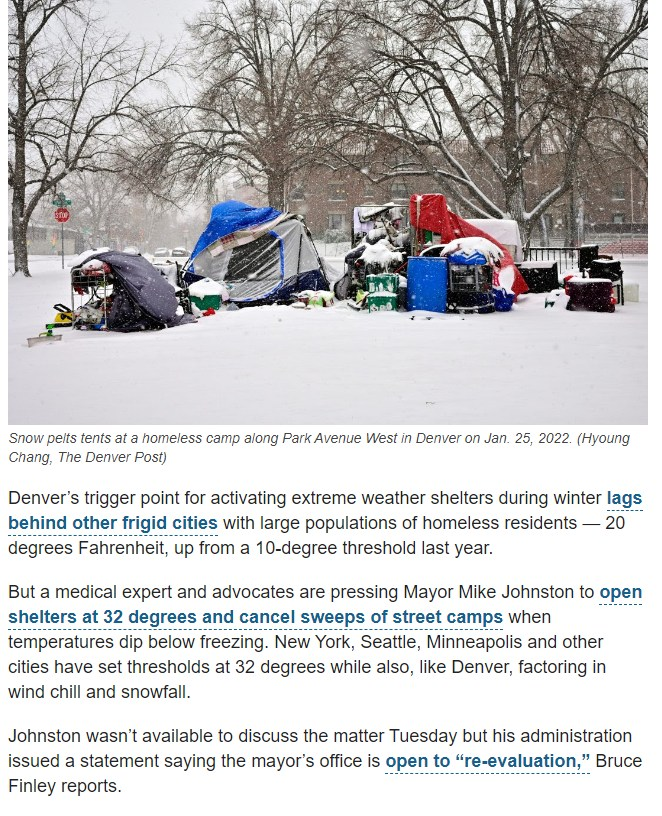

Timeline photos
In some cities in America the mayor actually is involved with homeless issues. This is an article saying that Denver's mayor is increasing the temperature of when extreme weather shelters open.
It was 10 degrees. Now he is doing 20 degrees.
But medical experts and advocates are pressing Mayor Mike Johnston to open shelters at 32 degrees and cancel sweeps of street camps when temperatures dip below freezing. New York, Seattle, Minneapolis and other cities have set thresholds at 32 degrees while also, like Denver, factoring in wind chill and snowfall.
@[139561179458303:274:City of Akron, Ohio - Mayor's Office] currently is not involved in this process at all.
Akron has a volunteer emergency shelter program run totally by non-paid people. (I think they pay the security guard, which is completely unnecessary. These aren't criminals. They are freezing human beings.)
We open our emergency shelter when the volunteers can make it happen. They try to open it when it's 15 degrees. But often they miss that number because they can't get people to run it.